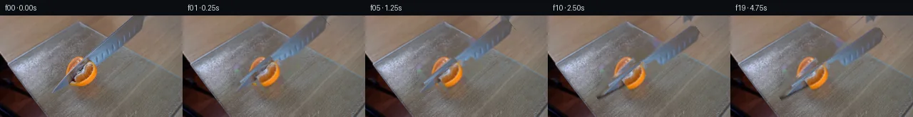

![首帧]()

Round 00
2026-11-05T19:25:06.149070+00:00像素候选变化代码 +348/−0inspection 更新
pixels c5aac29d4f96217e · code dd104203177279b4
查看本轮 generate.py 真实 diff
--- previous/generate.py
+++ current/generate.py
@@ -0,0 +1,348 @@
+#!/usr/bin/env python3
+"""PixelWorld case_0042: chef's knife finishing a slice through a tangerine half.
+
+Local pixel operations only. Frame 0 is first_frame.png verbatim; later frames
+are layered composites built from masks and textures extracted from frame 0:
+ plate (in-painted board/table) -> contact shadows -> rear quarter A
+ -> rigidly transformed blade -> front quarter B
+Only pixels inside a per-frame change footprint are repainted.
+"""
+from pathlib import Path
+import numpy as np
+import cv2
+from PIL import Image, ImageDraw
+from scipy.spatial import cKDTree
+
+ROOT = Path(__file__).parent
+IMG = np.array(Image.open(ROOT / 'first_frame.png').convert('RGB'))
+H, W = IMG.shape[:2]
+rng = np.random.default_rng(42)
+
+# ---------------------------------------------------------------- geometry
+TH0 = np.radians(-40.0)
+U = np.array([np.cos(TH0), np.sin(TH0)]) # along blade (to heel)
+N = np.array([-np.sin(TH0), np.cos(TH0)]) # blade normal (cutting side)
+O = np.array([68.0, 108.0]) # (s,q) origin
+yy, xx = np.mgrid[0:H, 0:W].astype(float)
+PX = np.stack([xx, yy], -1)
+REL = PX - O
+S = REL @ U
+Q = REL @ N
+
+# blade polygon q-bounds as function of s
+def blade_qup(s):
+ return np.where(s < 18, 3.0 - 9.5 * (s - 1.0) / 17.0, -6.5)
+
+def blade_qdn(s):
+ return np.minimum(3.3 + 0.139 * s, 17.5)
+
+def blade_inside(s, q, dil=0.0):
+ return (s >= 1 - dil) & (s <= 166 + dil) & (q >= blade_qup(s) - dil) & (q <= blade_qdn(s) + dil)
+
+BLADE0 = blade_inside(S, Q)
+
+# board quadrilateral interior
+C0, C1, C2, CE = (np.array([10., 68.]), np.array([109., 8.]),
+ np.array([256., 90.]), np.array([65., 143.]))
+def cross2(p, a, b):
+ return (p[..., 0] - a[0]) * (b[1] - a[1]) - (p[..., 1] - a[1]) * (b[0] - a[0])
+BOARD = (cross2(PX, C0, C1) < 0) & (cross2(PX, C1, C2) < 0) & (cross2(PX, C0, CE) > 0)
+
+# ---------------------------------------------------------------- fruit masks
+hsv = cv2.cvtColor(IMG, cv2.COLOR_RGB2HSV)
+Hc, Sc, Vc = hsv[:, :, 0], hsv[:, :, 1], hsv[:, :, 2]
+R, G, Bc = [IMG[:, :, i].astype(int) for i in range(3)]
+roi = (S > 18) & (S < 102) & (Q > -24) & (Q < 33)
+peel = (Hc >= 5) & (Hc <= 20) & (Sc >= 95) & (Vc >= 80)
+flesh = (Hc >= 6) & (Hc <= 30) & (Sc >= 30) & (Sc < 150) & (Vc > 118) & (R >= G - 8) & (G > Bc + 5)
+memb = (Sc < 70) & (Vc > 108) & (R > 90) & (R < 210) & (np.abs(R - Bc) < 45)
+fruit = ((peel | flesh | memb) & roi).astype(np.uint8)
+fruit = cv2.morphologyEx(fruit, cv2.MORPH_CLOSE, np.ones((3, 3), np.uint8))
+fruit = cv2.morphologyEx(fruit, cv2.MORPH_OPEN, np.ones((2, 2), np.uint8))
+
+Amask = (fruit > 0) & (Q < -2.5) & (S < 73)
+Bmask = (fruit > 0) & (Q > 6.5) & (S > 38)
+def keep_main(m, extra=None):
+ n, lab, st, _ = cv2.connectedComponentsWithStats(m.astype(np.uint8), 8)
+ out = np.zeros_like(m)
+ for i in range(1, n):
+ if st[i, 4] >= 12:
+ out |= lab == i
+ return out
+Amask = keep_main(Amask)
+Bmask = keep_main(Bmask)
+# close small holes inside fruit silhouettes
+Amask = cv2.morphologyEx(Amask.astype(np.uint8), cv2.MORPH_CLOSE, np.ones((5, 5), np.uint8)) > 0
+Bmask = cv2.morphologyEx(Bmask.astype(np.uint8), cv2.MORPH_CLOSE, np.ones((5, 5), np.uint8)) > 0
+
+# ---------------------------------------------------------------- textures
+def grid_texture(s0, s1, q0, q1):
+ """Sample frame0 onto a 1px (s,q) lattice."""
+ si = np.arange(s0, s1 + 1)
+ qi = np.arange(q0, q1 + 1)
+ gg_s, gg_q = np.meshgrid(si, qi) # rows=q, cols=s
+ w = O[0] + gg_s * U[0] + gg_q * N[0]
+ h = O[1] + gg_s * U[1] + gg_q * N[1]
+ map_x = w.astype(np.float32) - 0.5
+ map_y = h.astype(np.float32) - 0.5
… diff truncated; 261 more lines …